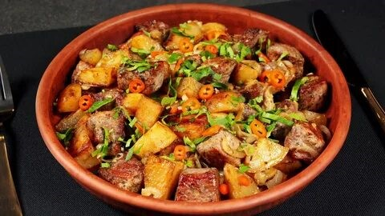
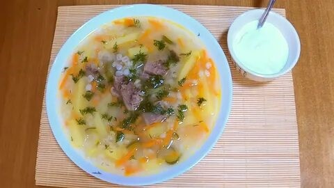
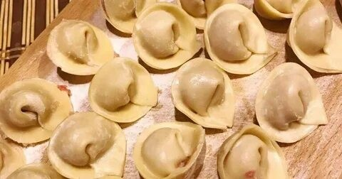
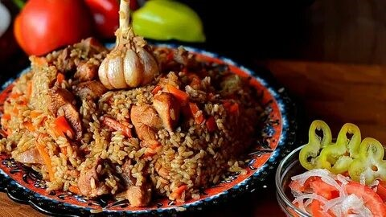

| Название блюда | Моя оценка | Ссылка на рецепт | Фото блюда | Видео |
|---|---|---|---|---|
| Оджахури | 8.5 / 10 | Рецепт |  | |
| Суп рассольник | 8.5 / 10 | Рецепт |  | |
| Домашние пельмени | 9.0 / 10 | Рецепт |  | |
| Узбекский плов | 9.5 / 10 | Рецепт |  |
Узбекский плов в казане по праву считается самым популярным видом этого блюда. Готовить его, конечно, можно и в кастрюле, и в сковороде, но результат будет недостаточно убедительным. Дело в том, что именно казан — большой, тяжелый и глубокий — обеспечивает те условия, благодаря которым ингредиенты плова приобретают правильную текстуру, а также напитываются вкусами и ароматами друг друга. Такое блюдо не стыдно будет подать даже самому требовательному знатоку узбекской кухни! Хотя, скажем честно, всегда найдется тот, кто отметит какое-либо нарушение классических основ. Мы не будем с ним спорить, лишь заметим, что рецептов узбекского плова в казане существует множество, и едва ли не в каждой семье этой восточной страны имеется свой вариант.
1 кг длиннозёрного риса
1 кг баранины
1 кг моркови
300 мл растительного масла
4 небольшие луковицы
2 небольших сухих острых перчика
чеснок – 2 головки
1 ст. л. сушеного барбариса
1 ст. л. зиры
1 ч. л. семян кориандра
соль
Рис для узбекского плова в казане промыть холодной водой, меняя ее несколько раз. Последняя вода после промывки должна остаться совершенно прозрачной. Рис подготовлен.
Баранину для плова вымыть и нарезать кубиками. 3 луковицы и всю морковь очистить. Лук порезать тонкими полукольцами, морковь – длинными брусками толщиной 1 см. Чеснок очистить от верхней шелухи, но не разделять на зубчики.
Казан или толстостенную кастрюлю разогреть, влить масло и прокалить его до появления светлого дымка. Добавить оставшуюся луковицу и хорошо обжарить ее до темно-золотистого цвета. Вытащить луковицу из кастрюли.
Подготовить зирвак (основу узбекского плова). Положить в казан нарезанный лук и, помешивая, обжарить до темно-золотистого цвета в течение 5-7 мин. Следите, чтобы он не пригорел.
Добавить к луку нарезанную баранину. Помешивая кулинарной лопаткой, жарить ингредиенты зирвака до коричневой румяной корочки. Это может занять около 10–15 минут.
Выложить казан к мясу с луком морковь. Жарить, не перемешивая, 3 минуты. Затем все содержимое казана перемешать и готовить 10 минут, слегка помешивая лопаткой.
Растереть пальцами или пестиком зиру и кориандр. Добавить в зирвак плова вместе с барбарисом и посолить по вкусу. Можно добавить соли чуть больше, чем вы привыкли: лишнюю впитает в себя рис.
Уменьшить огонь до среднего и готовить, пока морковь не станет мягкой, 7–10 мин. Влить в казан кипяток слоем 2 см. Положить острый перец. Уменьшить огонь и тушить зирвак 1 час.
Рис еще раз промыть, дать стечь воде. Выложить рис на зирвак плова ровным слоем, увеличить огонь до максимума и влить через шумовку в казан кипяток так, чтобы он покрыл рис слоем 3 см.
Как только вся вода впитается, вдавить в рис головки чеснока (до половины). Убавить огонь до среднего и варить до готовности плова под крышкой.
Несильно ударить шумовкой по рису. Если звук от удара будет глухим, сделать в рисе тонкой палочкой несколько проколов до самого дна. Таким образом через отверстия будет выходить пар.
Разровнять поверхность, накрыть узбекский плов большой плоской тарелкой, а сверху крышкой. Уменьшить огонь до минимума и оставить плов на огне на 30 мин.